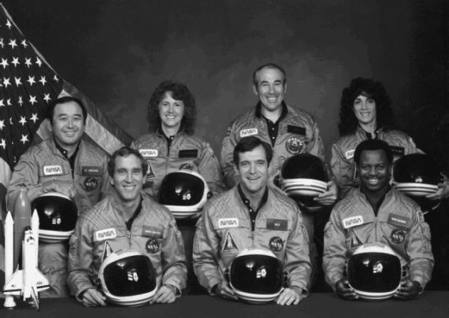
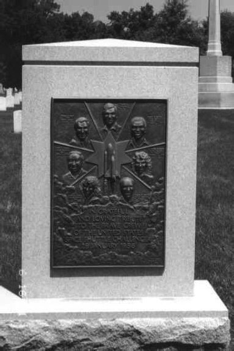

Взрыв «Челленджера»
Катастрофа космического корабля «Челленджер» стала знаковой для американской космонавтики. Долгое время вся история программы «Спейс Шаттл» делилась как бы на два периода: то, что было ДО, и то, что произошло ПОСЛЕ гибели «Челленджера». Так продолжалось семнадцать лет, пока не взорвалась «Колумбия». Как станут в будущем называть «этапы большого пути» кораблей многоразового использования, сейчас не скажет никто. Да и не так все это важно. Особенно для тех, кто стал жертвой всех этих потрясений.
Но вернемся к «Челленджеру». Тот зимний день 28 января 1986 года человечеству запомнится навсегда. Свидетелями «исторического» события стало все население Америки, которое могло видеть в прямом эфире репортаж с космодрома на мысе Канаверал. Небо было чистым, сияло яркое солнце, дул слабый ветер – хорошая погода для старта. У всех было приподнятое настроение, зрители, разместившиеся на гостевых трибунах, улыбались, наводили бинокли на стартовую площадку. Был там и тогдашний президент США Рональд Рейган с супругой. Он отвечал на вопросы репортеров и с интересом поглядывал на сверкавший белизной космический корабль.
К тому времени шаттлы уже «отметились» двадцатью четырьмя экспедициями на орбиту. Для «Челленджера» предстоящий старт должен был стать десятой миссией к звездам. Несмотря на то, что с начала года прошло всего четыре недели, уже второй корабль многоразового использования готовился к старту. А всего на 1986 год было запланировано пятнадцать рейсов. Программа «Спейс Шаттл» набирала обороты, и многим казалось, что нет такой силы, которая могла бы ее остановить. Но так было до старта корабля. Вскоре после того, как «Челленджер» взмыл в небо, в мире нельзя было найти ни одного человека, который придерживался таких взглядов. Для такой перемены потребовалось всего семьдесят три секунды.
В состав экипажа «Челленджера» входили семь человек.
Командир экипажа Фрэнсис Скоби (Francis Scobee) родился 19 мая 1939 года в штате Вашингтон, что на северо-западе США. В 1957 году он окончил среднюю школу и поступил на службу в американские ВВС. По программе переподготовки технического персонала получил разрешение на учебу в Аризонском университете, который окончил в 1965 году со степенью бакалавра в области аэрокосмической техники. Вслед за этим он получил квалификацию пилота и участвовал во Вьетнамской войне.
После возвращения в США окончил школу летчиков-испытателей на базе ВВС США Эдвардс. Принимал участие в испытаниях различных самолетов, в том числе пассажирского авиалайнера «Боинг-747», ракетного прототипа Х-24В и других. Всего освоил 45 типов самолетов, имел налет свыше 6500 часов.
В 1978 году был зачислен в отряд астронавтов НАСА. Прошел годичный курс общекосмической подготовки и получил квалификацию пилота кораблей многоразового использования. Свой первый полет в космос совершил в апреле 1984 года в качестве пилота корабля «Челленджер». Январский старт был вторым в карьере Скоби.
Пилот корабля Майкл Смит (Michael Smith) родился 30 апреля 1945 года в небольшом городке Бoфорт в штате Северная Каролина. Там же в 1963 году окончил среднюю школу, после чего поступил на службу в американский флот. В 1967 году окончил Академию ВМС, а затем флотскую аспирантуру в городе Монтерей в штате Калифорния. Участник Вьетнамской войны.
Вернувшись в США, окончил школу летчиков-испытателей ВМС и некоторое время преподавал в ней. Затем вновь вернулся на флот и служил на авианосце «Саратога».
В 1980 году был отобран кандидатом в астронавты и после годичного курса общекосмической подготовки получил квалификацию пилота шаттлов. Полет на «Челленджере» должен был стать первым в его космической карьере.
Специалист полета Рональд МакНэйр (Ronald McNair) родился 21 октября 1950 года в Лэйк Сити в штате Южная Каролина. Там же в 1967 году окончил среднюю школу и поступил в местный университет. В 1971 году окончил учебу, получив степень бакалавра по физике. В 1976 году в Массачусетском технологическом институте был удостоен докторской степени в области философских аспектов физических наук. Несколько лет работал в различных научных учреждениях Америки, занимался исследованиями в области лазерной техники.

Экипаж шаттла «Челленджер»
В 1978 году был зачислен в отряд астронавтов НАСА, а через год был квалифицирован как специалист полета кораблей многоразового использования. В феврале 1984 года совершил свой первый полет в космос на борту корабля «Челленджер». МакНэйр, как и Фрэнсис Скоби, во второй раз отправлялся на орбиту.
Специалист полета Джудит Резник (Judith Resnik) родилась 5 апреля 1949 года в городе Акрон в штате Огайо. В 1966 году окончила среднюю школу, а в 1970 году – Университет Карнеги-Меллон со степенью бакалавра в области электротехники. После этого работала в компании RCA, занималась биоинженерией. В 1977 году в Мэрилендском университете защитила докторскую диссертацию по электротехнике и электронике.
В отряде астронавтов НАСА с 1978 года. В августе-сентябре 1984 года совершила полет в космос на корабле «Дискавери». Полет на «Челленджере» был для Резник вторым стартом в космос.
Специалист полета Эллисон Онизука (Ellison Onizuka) родился 24 июня 1946 года на Гавайях. Там же окончил среднюю школу. А вот высшее образование получил в Колорадском университете, уже на континенте.
С 1970 года Онизука служил в ВВС США. Занимался испытанием авиационного оборудования для различных типов самолетов. Затем окончил школу летчиков-испытателей на базе ВВС США Эдвардс.
В 1978 году был отобран в отряд астронавтов НАСА. В январе 1985 года совершил полет в космос на корабле «Дискавери» по программе Министерства обороны США. Был одним из четырех членов экипажа «Челленджера», имевших опыт космических путешествий.
Специалист по работе с полезной нагрузкой Грегори Джарвис (Gregory Jarvis) родился 24 августа 1944 года в Детройте в штате Мичиган. Среднюю школу окончил в городе Мохок в штате Нью-Йорк, а затем поступил в университет в Олбани. Специалист в области электроники. После получения высшего образования работал в ряде американских компаний, занимался созданием телекоммуникационных спутников.
Летом 1984 года был зачислен в группу специалистов по работе с полезной нагрузкой НАСА. Полет на «Челленджере» был для Джарвиса первым в космической карьере.
Седьмым членом экипажа была школьная учительница Криста МакОлифф (Christa McAuliffe), которая должна была провести два телеурока из космоса и снять учебный фильм. Ее отобрали из 11 146 кандидатов по программе «Учитель в космосе».
Криста родилась 2 сентября 1948 года в Бостоне в штате Массачусетс. В 1966 году окончила среднюю школу в том же штате, но в городе Фрамингем. Окончила местный колледж и получила степень бакалавра в области искусств. В 1978 году в государственном колледже города Бови, штат Мэриленд, получила степень магистра в области образования. В течение пятнадцати лет преподавала в старших классах ряда школ штатов Мэриленд и Нью-Гемпшир.
В июле 1985 года была отобрана для полета на корабле многоразового использования. Очень часто Кристу считают первым непрофессиональным астронавтом, который должен был отправиться на орбиту. На самом деле это не так, до МакОлифф в космосе уже бывали непрофессионалы.
Семь человек разных рас, национальностей, вероисповеданий. Объединяло их только одно – все они были гражданами США. Когда погибнет «Колумбия», найдут много общего в судьбах членов экипажа. Там тоже погибнут представители разных рас и вероисповеданий. Единственным отличием от «Челленджера» станет то, что экипаж «Колумбии» будет международным. Но о второй катастрофе корабля многоразового использования нам еще предстоит поговорить, поэтому вернусь к первой аварии.
Трагедия случилась на семьдесят третьей секунде полета, когда корабль поднялся на высоту четырнадцать километров. На глазах людей всего мира в одно мгновение он обратился в белое пузырящееся облако. В тот момент все очевидцы буквально потеряли дар речи. А с неба в Атлантический океан падали раскаленные обломки «Челленджера».
Гибель астронавтов потрясла большинство жителей планеты. К сожалению, эту печаль разделяли далеко не все. Хорошо помню, каким тоном дикторы советского Центрального телевидения зачитывали это сообщение. А уж что говорить о простых гражданах, откровенно злорадствовавших по поводу произошедшей трагедии. Пусть Бог будет им судьей. Как говорится, не рой яму другому, сам в нее попадешь. Так и произошло всего через три месяца после гибели «Челленджера», когда над нами грянул «чернобыльский гром».
Взрыв «Челленджера»
На следующий день после катастрофы над Атлантикой была создана президентская комиссия, которую возглавил бывший государственный секретарь США Уильям Роджерс (William Rogers). Что же удалось выяснить целой армии специалистов, привлеченных к работе?
Как оказалось, причин катастрофы быдо две. Во-первых, недостаточно надежная конструкция соединения сегментов в твердотопливном ускорителе. А во-вторых, стиль руководства в Центре космических полетов имени Маршалла в городе Хантсвилл в штате Алабама, специалисты которого отвечали за двигательные системы кораблей многоразового использования.
Конструкции всех космических летательных аппаратов обладают определенной гибкостью, поскольку абсолютно жесткое сооружение при таких нагрузках обязательно сломается. Так и шаттл, включая ускорители, изгибается при запуске двигателей. Специалисты отмечали, что при изгибе газообразные продукты сгорания в твердотопливном ускорителе прорываются через соединение заднего и центрального заднего сегментов. В большинстве полетов это соединение с двумя уплотняющими кольцами самоуплотнялось. Хотя ситуация с прорывом газов повторялась, казалось, что проблема не угрожает безопасности полетов. В то же время стиль руководства центра имени Маршалла не поощрял персонал сообщать о возникающих проблемах, поэтому специалисты описывали их уклончиво или осторожно, затушевывая потенциальную опасность.
В ночь перед запуском «Челленджера» над космодромом разразилась ледяная буря, в результате чего соединения и уплотнительные кольца на ускорителях переохладились и обледенели. Когда ускорители «Челленджера» изогнулись при запуске, уплотняющие кольца оказались недостаточно эластичными, и образовалась постоянная щель, через которую прорвались продукты сгорания. Язык пламени достиг одной из распорок, фиксирующих ускоритель. Через 72 секунды после старта, вскоре после того как «Челленджер» прошел точку максимального динамического давления, распорка прогорела, ускоритель повернулся, прорвал днище водородного блока и повредил кислородный блок. Огромный топливный бак мгновенно взорвался.
По иронии судьбы, твердотопливные ускорители, которые стали причиной катастрофы, имея собственную систему наведения, продолжали полет до тех пор, пока им не была дана с Земли команда на самоуничтожение.
Вот такую картину катастрофы нарисовали эксперты. Однако официально объявленные причины удовлетворили далеко не всех. Многие были склонны считать ее слишком простой и недостаточно полной. По их мнению, надо было изучить и проанализировать не только события происшедшие при старте, но и всю технологическую цепочку предстартовых операций, а также конструктивные решения, принятые при создании отдельных узлов многоразовой системы. Ничего этого сделано не было и специалисты до сих пор считают истинную причину гибели «Челленджера» неизвестной.

Мемориал членам экипажа корабля «Челленджер» на Арлингтонском кладбище в Вашингтоне
При расследовании катастрофы инженеры НАСА обнаружили еще несколько проблем, которые в конце концов могли привести к неприятностям во время будущих полетов. Конструкцию оставшихся шаттлов доработали. Наиболее важным изменением была разработка нового соединения сегментов ускорителя с тремя уплотняющими кольцами и более эффективным креплением. Кроме того, были введены новые методы извещений, которые поощряли служащих обращаться к высшему руководству, если они считали, что существует угроза безопасности полета.
Катастрофа «Челленжера» круто изменила развитие американской, да и мировой космонавтики. По прошествии стольких лет это можно утверждать достаточно уверенно. О том, что пришлось отменить все запланированные полеты на 1986–1987 годы и говорить не надо. Это само собой разумеющееся.
Но самыми тяжелыми последствиями я считаю тот факт, что пилотируемые полеты в космос до сих пор остаются уделом избранных. Не будь той катастрофы, американцам удалось бы достигнуть частоты полетов 15–24 раз в год. По сравнению с единичными запусками пилотируемых кораблей в последние годы, эта цифра впечатляет. Соответственно, и Советскому Союзу пришлось бы по иному строить свои планы, учитывая достижения извечного соперника по космической гонке.
Американцы вынуждены были на долгие годы приостановить программу «Учитель в космосе», в рамках которой в свой полет отправилась Криста МакОлифф. Реализовать ее смогли лишь двадцать с лишним лет спустя, когда на орбите побывала дублер Кристы – Барбара Морган (Barbara Morgan). Урок, проведенный с борта шаттла, она посвятила памяти своей погибшей подруги.
Пришлось отказаться и от планов туристических полетов в космос. Если до январской катастрофы в США существовали проекты создания пассажирского модуля для размещения в грузовом отсеке шаттлов, в котором помещались бы одновременно до тридцати пассажиров, то потом полеты гражданских специалистов были признаны слишком опасными, и этот проект также был закрыт.
Правда, можно найти и положительные стороны этой корреляции планов. Американские военные очень остро восприняли катастрофу «Челленджера». Посчитав корабли многоразового использования ненадежными носителями, они на будущее отказались от их применения при выводе на орбиту своих грузов. Кроме того, было заморожено строительство стартового комплекса для шаттлов на базе ВВС США Ванденберг, с которого предполагалось запускать военные корабли. Ну а следствием стало то, что многие планы по милитаризации космического пространства не были реализованы, и мы сейчас живем в более или менее спокойное время. Я говорю только об околоземной орбите, а не о земной поверхности, где до спокойствия еще ой как далеко.